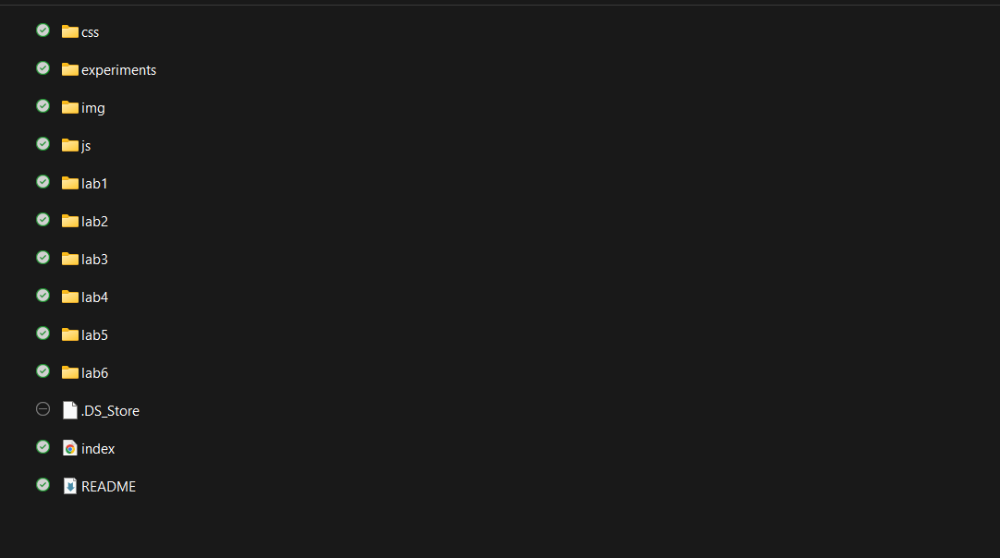

Lab 3 - Subject/Topic
Challenge
The idea of this lab was to add onto the local file structure on the computer and create more index.html files for our websites.
Problems
I experienced strange updates onto my page where any saved work would not appear on my webpage, instead showing pre-made files like the README.md. Luckily, I was able to fix most of the problems on my own, but did ask my partner for help.
Reflection
Despite this lab being the easiest, I had a much harder time with it than I did the previous two. There were strange updates that my webpage would make and I could not figure out the causes. But eventually, I managed to fix them on my own.
Results
My website has been personalized and my files are all organized with the template provided:
